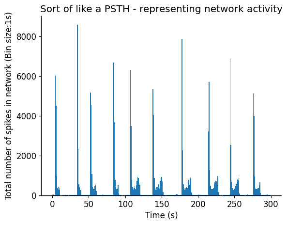
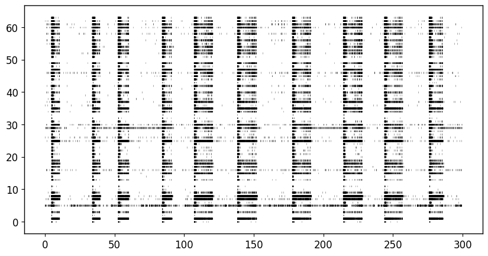
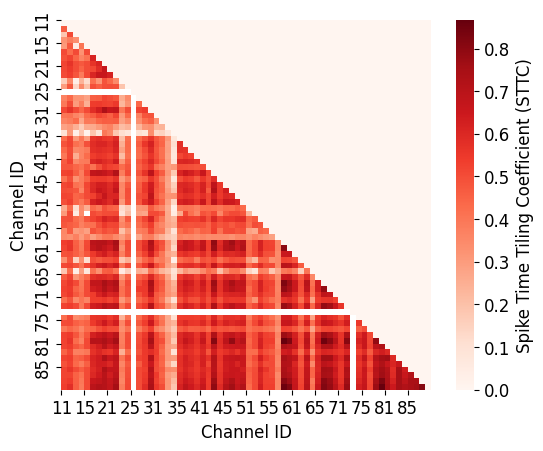
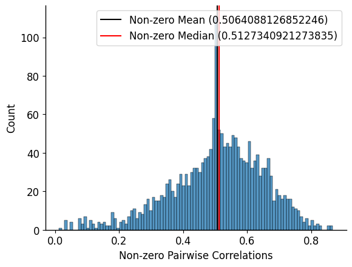
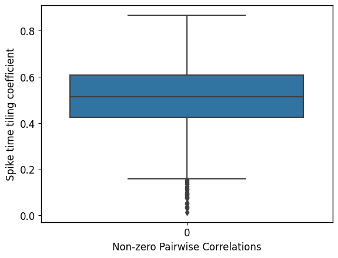
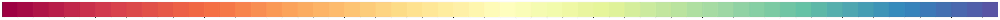
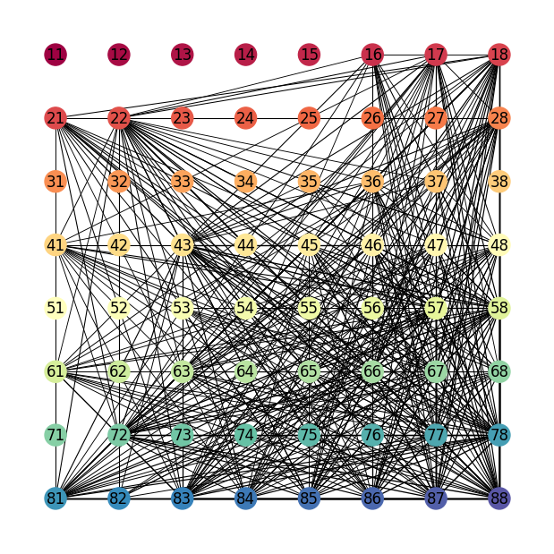
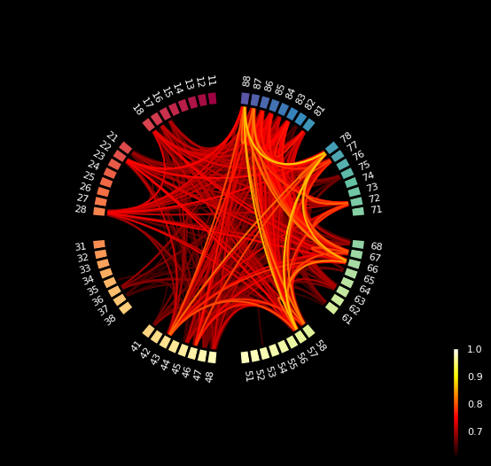
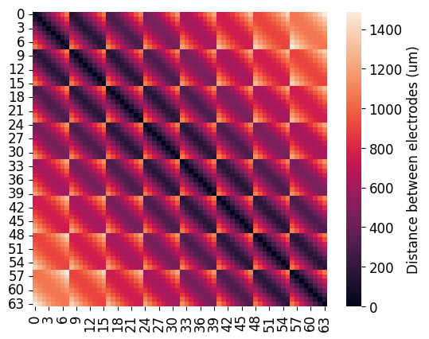
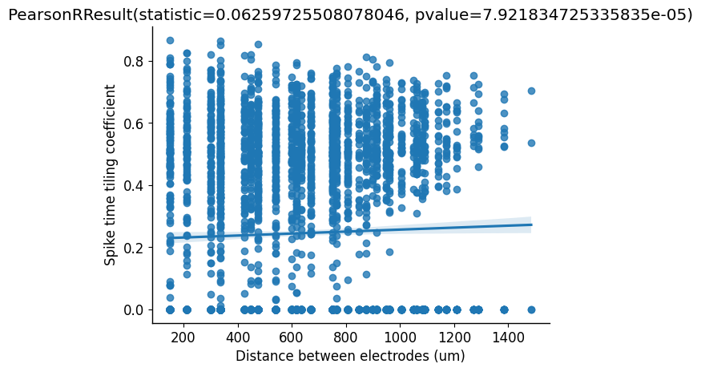

Spiking Time Tiling Coefficient - Pairwise correlations between spike trains
Published:
Install necessary packages
!pip install elephant
!pip install networkx
!pip install mne
!pip install mne_connectivity
Import Libraries
import neo
import quantities as pq
from elephant.spike_train_correlation import spike_time_tiling_coefficient
import networkx as nx
from mne.viz import circular_layout
from mne_connectivity.viz import plot_connectivity_circle
import numpy as np
import pandas as pd
import seaborn as sns
import matplotlib.pyplot as plt
from itertools import chain
from scipy.stats import pearsonr
Load Data
well_data = pd.read_csv("/content/drive/MyDrive/Colab Notebooks/Well_data.csv")
well_data.head()
| Unnamed: 0 | Time (s) | Electrode | Well | Channel | |
|---|---|---|---|---|---|
| 0 | 80 | 0.00568 | C4_43 | C4 | 43 |
| 1 | 87 | 0.00608 | C4_16 | C4 | 16 |
| 2 | 620 | 0.07856 | C4_16 | C4 | 16 |
| 3 | 626 | 0.08040 | C4_55 | C4 | 55 |
| 4 | 700 | 0.10656 | C4_16 | C4 | 16 |
well_data["Electrode"].unique()
array(['C4_43', 'C4_16', 'C4_55', 'C4_87', 'C4_46', 'C4_18', 'C4_85',
'C4_47', 'C4_31', 'C4_83', 'C4_61', 'C4_78', 'C4_86', 'C4_67',
'C4_63', 'C4_81', 'C4_42', 'C4_56', 'C4_57', 'C4_22', 'C4_53',
'C4_72', 'C4_21', 'C4_66', 'C4_28', 'C4_75', 'C4_48', 'C4_12',
'C4_58', 'C4_38', 'C4_68', 'C4_84', 'C4_65', 'C4_88', 'C4_54',
'C4_77', 'C4_34', 'C4_17', 'C4_36', 'C4_45', 'C4_24', 'C4_76',
'C4_26', 'C4_74', 'C4_37', 'C4_32', 'C4_11', 'C4_44', 'C4_27',
'C4_71', 'C4_33', 'C4_14', 'C4_41', 'C4_35', 'C4_82', 'C4_13',
'C4_62', 'C4_51', 'C4_64', 'C4_52', 'C4_15', 'C4_23'], dtype=object)
This is how my data looks like. The “Unnamed: 0” column is just indices from a large dataframe this data was extracted from (and my carelessness in not dropping the column). The Electrode name in my data is organized based on the well and channel position. The original data had 12 wells (A1->C4). The first digit in Channel is the X or row position, and the second digit is Y or column position. My data is from a 64 channel (8x8) multielectrode array.
This will likely look different from your data. You can either format your data to match this or you can change how the “generate_raster()” function works to handle your data.
Quick look at the network activity
plt.hist(well_data["Time (s)"], bins=300);
sns.despine()
plt.xlabel("Time (s)")
plt.ylabel("Total number of spikes in network (Bin size:1s)")
plt.title("Sort of like a PSTH - representing network activity")
Text(0.5, 1.0, 'Sort of like a PSTH - representing network activity')

Handling spike sorted data
Note: The code below is made for MUA activity (i.e., one signal per channel). For spike-sorted data that may have multiple units from a single channel, my first attempt would be to create “pseudo-channels”. This is where you create new channel labels that reflect an arbitrary spatial organization.
For example: If you have 6 channels in a 2x3 grid and each channel has between 0-3 units, you can do the following.
Original channel labels: [11, 12, 21, 22, 31, 32]
Number of units per channel: [2, 1, 0, 3, 1, 1]
This means channel 11 had 2 units, channel 12 had 1 units, channel 21 had 0 units, etc, etc.
Pseudo-channel labels: [1101, 1102, 1201, 2201, 2202, 2203, 3101, 3201]
In this case, I multiplied the original channel labels by 100 and added the unit ID. Channels that had no units were ignored.
By doing this, you should still have the option to preserve some spatial organization when visualizing the data. Personally have not looked into this, so external readings may be required to actually get this done. Otherwise, you can skip trying to plot everything in a grid and just do an unstructed network graph.
Convert data frame into a usable array format
channel_ids = [i for j in range(1, 9) for i in range(j * 10 + 1, j * 10 + 9)]
'''
The above produces the following:
[11, 12, 13, 14, 15, 16, 17, 18,
21, 22, 23, 24, 25, 26, 27, 28,
31, 32, 33, 34, 35, 36, 37, 38,
41, 42, 43, 44, 45, 46, 47, 48,
51, 52, 53, 54, 55, 56, 57, 58,
61, 62, 63, 64, 65, 66, 67, 68,
71, 72, 73, 74, 75, 76, 77, 78,
81, 82, 83, 84, 85, 86, 87, 88]
'''
# Sort data frame containing mixed-bag of electrode and spike times based on channel name
def generate_raster(well_data, duration, channel_ids):
'''
well_data: Data frame in the format seen above
duration: Length of recording in seconds (in this case 300 seconds)
channel_ids: Name of all channels in the format seen in the data frame "channel" column
'''
raster = []
# Loop through each channel regardless of activity
for channel in channel_ids:
# If the channel is found in my data (i.e., it had at least 1 spike)
if int(channel) in well_data["Channel"].to_list():
# Find spike times associated with that channel
spiketrain = well_data.loc[well_data["Channel"]==int(channel), well_data.columns.str.contains("Time")].reset_index(drop=True)
# Convert spike times that occur before the end of the recording (i.e., duration) to an array
spiketrain = spiketrain.to_numpy().flatten()[spiketrain.to_numpy().flatten() <= duration]
# Store array
raster.append(spiketrain)
# If the channel is not found in my data, I still want to store that it was empty
else:
raster.append([])
return raster
raster = generate_raster(well_data, 300, channel_ids)
Visualize network activity (as a raster plot)
plt.figure(figsize=(10,5))
plt.rcParams.update({'font.size': 12})
plt.rc('axes', linewidth=1)
plt.eventplot(raster, color='black', linelengths=0.5, linewidths=0.75, alpha=0.35);

Calculate pairwise correlation using Elephant’s STTC
def calculate_pairwise_correlations(raster, duration, dt=0.005*pq.s):
# Create an empty n x n matrix, where n is the number of channels
sttc_m = np.ones((len(raster), len(raster))) * np.nan
# Iterate through each channel, compute pairwise correlations, store in matrix in appropriate position
for i, ch1 in enumerate(raster):
for j, ch2 in enumerate(raster):
ch1_spiketrain = neo.SpikeTrain(ch1, units="s", t_stop=duration)
ch2_spiketrain = neo.SpikeTrain(ch2, units="s", t_stop=duration)
sttc_m[i][j] = spike_time_tiling_coefficient(ch1_spiketrain, ch2_spiketrain, dt)
return sttc_m
sttc = calculate_pairwise_correlations(raster, duration=300*pq.s)
Visualize correlation matrix
# Since correlation matrix is symmetrical, grab only the lower triangle to avoid repeat correlations
STTC_lt = np.tril(sttc, k=-1)
STTC_lt = np.where(STTC_lt < 0, np.nan, STTC_lt)
# Visualize
hm = sns.heatmap(STTC_lt,
yticklabels=channel_ids, xticklabels=channel_ids,
cmap=sns.color_palette("Reds",as_cmap=True), cbar=True,
cbar_kws={'label': 'Spike Time Tiling Coefficient (STTC)'},
square=True);
plt.xticks(range(0, len(channel_ids), 4), channel_ids[::4]);
plt.yticks(range(0, len(channel_ids), 4), channel_ids[::4]);
plt.xlabel("Channel ID")
plt.ylabel("Channel ID")

Plot distribution of correlations
# Filter data so that nan and 0 values are removed.
flattened_nonzero_STTC = [x for x in STTC_lt.flatten() if (x != 0) & (~np.isnan(x))]
# Visualize and descriptive statistics
sns.histplot(data=flattened_nonzero_STTC, bins=100)
plt.xlabel("Non-zero Pairwise Correlations")
plt.axvline(np.nanmean(flattened_nonzero_STTC), color='black')
plt.axvline(np.nanmedian(flattened_nonzero_STTC), color='red')
plt.legend([f"Non-zero Mean ({np.nanmean(flattened_nonzero_STTC)})",f"Non-zero Median ({np.nanmedian(flattened_nonzero_STTC)})"])
sns.despine()

Since mean is slightly less than median, the distribution is left-skewed. But considering how close they are, this distribution is arguably symmetrical.
sns.boxplot(data=flattened_nonzero_STTC)
plt.xlabel("Non-zero Pairwise Correlations")
plt.ylabel("Spike time tiling coefficient")
Text(0, 0.5, 'Spike time tiling coefficient')

Determine threshold based on distribution of correlations and filter values
Considering that there can be up to 2048 edges (64 channels x 64 channels / 2), I will be thresholding subsequent visualizations for any correlation greater than the third quartile (~0.6).
THRESHOLD = np.quantile(flattened_nonzero_STTC, 0.75) # Gets 3rd quartile (i.e., end of IQR)
print(f"We will be using a correlation threshold of {THRESHOLD}")
'''
Replace values that didn't meet the threshold to 0. Ideally, you convert them to
nan values, but for some reason,t for some reason the connectivity circle handles
nan values as very large numbers and throws off the n_lines parameter, such that
you need to plot many more lines than needed.
'''
STTC_threshold = np.where(STTC_lt < THRESHOLD, 0, STTC_lt)
We will be using a correlation threshold of 0.6064791131257226
Visualize connectivity grid
# Create color palette that will be used to visualize spatial position of electrodes
palette = sns.color_palette("Spectral",512)
palette1 = [palette[i] for i in np.arange(1,512,8)]
sns.palplot(palette1)

# Create a graph object
plt.figure(figsize=(6,6))
G = nx.Graph()
# Add nodes to the graph
for i in range(64):
G.add_node(i)
# Add edges to the graph based on the correlations
for i in range(64):
for j in range(64):
if i != j:
correlation = STTC_threshold[i, j]
if correlation >= THRESHOLD: # Only add node if value passes threshold (probably don't need this anymore)
G.add_edge(i, j, weight=correlation)
weights = nx.get_edge_attributes(G,'weight').values()
weights = [(w-0.29)*2 for w in list(weights)]
# Create a layout for the graph as a 4x4 grid
pos = {}
for i in range(8):
for j in range(8):
pos[i * 8 + j] = (j, -i)
# Create label map with electrode names
mapping = {old_label: new_label for old_label, new_label in zip(G.nodes(), channel_ids)}
# Draw the graph using the grid layout
nx.draw(G, pos, labels=mapping, node_color=palette1,
with_labels=True, font_color='black', width=weights)
# Display the graph
plt.axis('off')
(-0.7350000000000001,
7.734999999999999,
-7.734999999999999,
0.7350000000000001)

Visualize connectivity circle
node_order = list()
node_order.extend(channel_ids)
# This will format the grid. Group boundaries separates distinct rows in this data
node_angles = circular_layout(channel_ids, node_order, start_pos=90, group_boundaries=[0, 8, 16, 24, 32, 40, 48, 56])
fig, ax = plt.subplots(figsize=(8, 8), facecolor='black',
subplot_kw=dict(polar=True))
# Plots the top 500 strongest connections
plot_connectivity_circle(STTC_threshold, channel_ids, vmin=THRESHOLD, vmax=1, n_lines=500,
node_angles=node_angles, interactive=True,
textcolor='white',
ax=ax)

(<Figure size 800x800 with 2 Axes>, <PolarAxes: >)
Plot correlation with respect to distance between electrodes
# Calculates a matrix of distances that maps onto the same nxn matrix of correlations
def calculate_distance(electrode_spacing=150, channel_ids=None, electrode_diameter=50):
'''
Each well contains 64 electrodes arranged in an 8x8 grid.
Electrode spacing: 150um
Electrode diameter: 50um
Recording area: 1.1mm x 1.1mm
'''
distance = []
for ch1 in channel_ids:
ch1_x = int(str(ch1)[0])
ch1_y = int(str(ch1)[1])
for ch2 in channel_ids:
ch2_x = int(str(ch2)[0])
ch2_y = int(str(ch2)[1])
distance_tmp = np.sqrt((ch2_x-ch1_x)**2 + (ch2_y-ch1_y)**2) * electrode_spacing
distance.append(distance_tmp)
distance = np.reshape(distance, (int(np.sqrt(len(distance))),int(np.sqrt(len(distance)))))
return distance
MEA_distances = calculate_distance(channel_ids=channel_ids)
sns.heatmap(MEA_distances,
cbar=True, cbar_kws={'label': 'Distance between electrodes (um)'},
square=True)
<Axes: >

# Create a data frame with all the STTCs associated with appropriate distance.
# This data frame makes it easier to plot later, especially once you have other variables that act as groups
distance = MEA_distances.flatten()
flattened_STTC = STTC_lt.flatten() # I am going to use the original STTC (using filtered STTC was only for visualization purposes)
if len(distance) == len(flattened_STTC):
print(f"Both arrays have matching lengths")
else:
print(f"Array length mismatch - check how the MEA distances are calculated. Likely incorrect channel_ids")
STTC_distances = pd.DataFrame({"Distance": distance, "STTC": flattened_STTC})
STTC_distances.dropna(inplace=True)
STTC_distances.tail()
Both arrays have matching lengths
| Distance | STTC | |
|---|---|---|
| 4091 | 600.0 | 0.722781 |
| 4092 | 450.0 | 0.738558 |
| 4093 | 300.0 | 0.759270 |
| 4094 | 150.0 | 0.810300 |
| 4095 | 0.0 | 0.000000 |
sns.regplot(data=STTC_distances[STTC_distances["Distance"]!=0], x="Distance", y="STTC")
pearsonr = pearsonr(STTC_distances["Distance"], STTC_distances["STTC"])
plt.xlabel("Distance between electrodes (um)")
plt.ylabel("Spike time tiling coefficient")
plt.title(pearsonr)
sns.despine()

regplot performs and then visualizes linear regression model fit. Based on the calculated Pearson Correlation Coefficient of 0.06, there is a very weak positive correlation between STTC and distance.
This is surprising because it would have been expected that closer electrodes (i.e., shorter inter-channel distance) would be more correlated and that the correlation decreases with increasing distance.